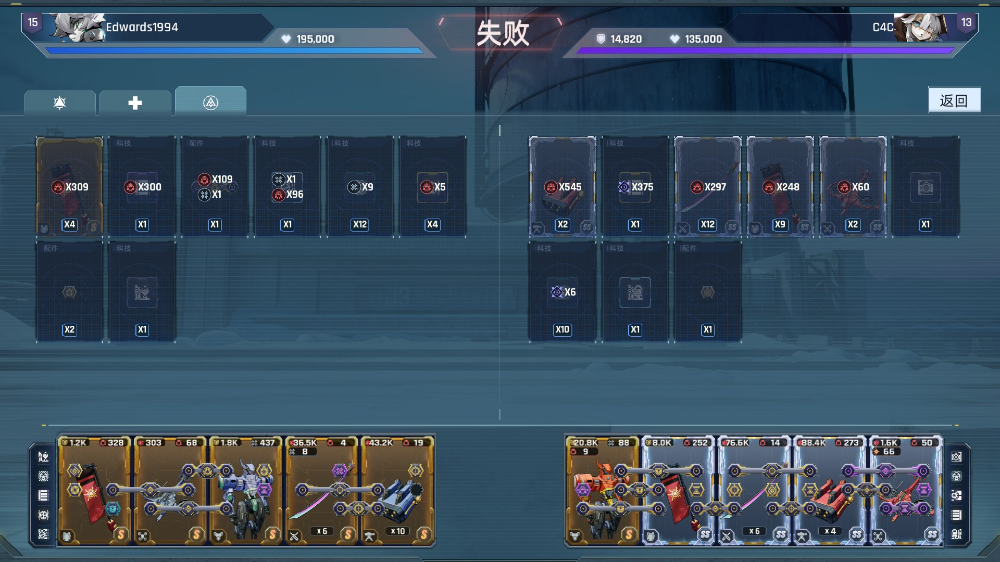
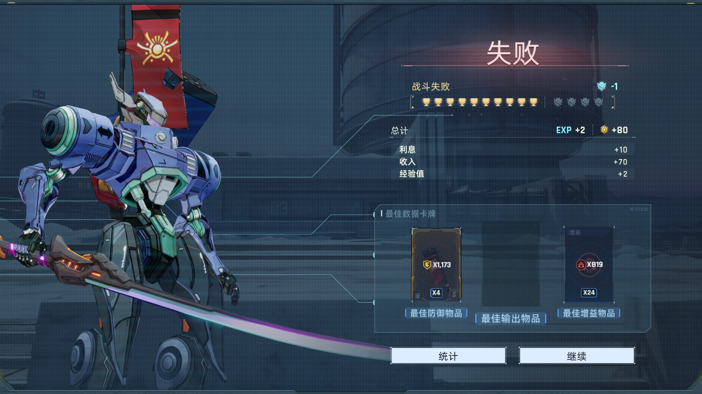

零输出及统计核查
候选007 · 尚未确认Bug，可能是正常启动失败。2026-11-16，Windows Steam Demo 1.0.0.2218 / Build 26644085，第二局第16天，C4C，单次观察。
已知事实
我方出战S成长刀6段约5.4秒、S肩炮10段10.8秒、力量吸血无人机；敌方SS干扰脉冲V每3秒随机禁用一件敌方装备3秒。战斗截图可见我方刀区域禁用样式。败局伤害页我方没有条目，防御页无治疗，仅1173＋34护盾，增益页仍有819力量来源。敌方肩炮137214、刀125749、燃烧685伤害，最后获胜。摘要最佳输出为空，和详细伤害页一致。
为什么暂不判Bug
有高面板和力量并不等于完成攻击。长冷却肩炮可能未启动，刀可能在关键时点被禁用，吸血也依赖部署和伤害。现有截图没有覆盖完整战斗时间轴，没有证明我方确实命中过敌人，因此“战斗正确、没有有效输出”足以解释现象，不能宣称统计漏记。AI战前预测胜属于已确认的模型误判，不据此认定游戏错误。
下一次最小核查
- 从可重建配置记录完整战斗，保留首次部署、每次禁用对象/起止、实际开火、命中数字、敌方HP/护盾变化。
- 若我方在死亡前没有命中，零伤害符合预期，关闭该疑点；将失败归入启动时序。
- 若明确命中并降低对方HP或护盾，但对应来源统计仍为空，才确认统计漏记，并检查过量伤害、盾伤害和召唤归属口径。
- 若禁用表现超出词条，再独立复现控制问题，不与统计问题混成一个已确认Bug。
当前复现率未知、无修复。战报卡底部×N口径未确认，不用它直接推断释放次数。统计顶部195000是显示值，不能当成我方结束剩余生命。

